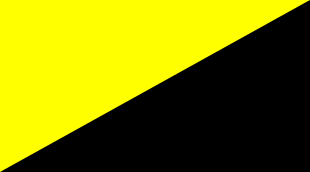

- El anarcocomunismo (conocido también como comunismo anarquista, comunismo libre, comunismo libertario y anarquismo comunista)
es una teoría del anarquismo que se basa en conseguir una abolición estatal, el capitalismo, el trabajo asalariado y la propiedad privada
(respetando el drecho a la propiedad personal) a favor de conseguir la propiedad común de estos medios de producción, democracia directa y representantiva
y una red horizontal de consejos de trabajadores, donde estos puedan defender sus drechos, deberes, propiedades, etc.
Otras formas de comunismo anarquista, tales como el anarquismo insurreccional, están muy relacionadas con influencias egoistas y por un marcado
individualismo radical, de tal modo se termina creyendo que el anarcocomunismo se convertiria en el mejor sistema social para obtener una real libertad individual y social.
- El anarcosindicalismo es una de las ramas del anarquismo relacionada con el movimiento obrero a través del sindicalismo provocado por los trabajadores.
Es un método de organización y de lucha de estos a través de una representacion, conformada por unos sindicatos autónomos. Es el resultado de la síntesis del
anarquismo y el sindicalismo obrero y revolucionario. Se diferencia de otros movimientos anarquistas debido a que no se trata de un movimiento no exclusivo que se completa
con otras organizaciones para conseguir los fines propuestos desde un inicio.
- El anarquismo colectivista es un tipo de anarcosocialismo cuyas proposiciones se basan en que a través de una revolución de la sociedad frente al estado,
se conformará una sociedad basada en colectivos de trabajo, siendo los trabajdores los dueños de sus propios medios de producción y en una distribución donde el trabajo realizado sirva
para hacer un prodicto de principio a fin, aumentando el estatus y la unión libre de trabajadores y productores.
- El anarquismo individualista o anarcoindividualismo es una variante del anarquismo con un particular énfasis en la autonomía y la indiviudalidad propia de cada individuo, argumentando que cada uno es dueño de si mismo y que por tanto, interactua con los otros a través de la asociación voluntaria. El anarquismo individualista se refiere a algunas tradiciones propias del movimiento anarquista que priorizan al individuo sobre toda clase de determinantes externos
- El mutualismo es una corriente relacionada con el anarquimo, que puede ser atribuida a los escritos de Pierre-Joseph Proudhon, y que se basa en la proposicion de una sociedad futura sin Estado, donde la propiedad de los medios de producción pueda ser individual o colectiva siempre que el intercambio de bienes y servicios represente equivalentes cantidades de trabajo
- El anarquismo feminista o anarcofeminismo se identifica como una corriente de pnensamiento que enlaza al feminismo con el anarquismo. El anarcofeminismo busca la autonomía de cada mujer, es decir, su emancipación y realización como individuo y como género femenino con sus particularidades. Esta teoría surgió a mediados de la década de 1970 como una escisión del feminismo radical.
- El anarquismo ecologista o anarquismo verde se indentifica como una corriente de pensamiento dentro del anarquismo y el ecologismo radical que pone el énfasis en los temas medioambientales. Dentro de esta corriente conviven posturas anarcoindividualistas (como el primitivismo) con la ecología social, de corte anarcosocialista.

- El agorismo es una teoría política sobre cómo alcanzar una sociedad anarquista de mercado usando una estrategia revolucionaria llamada «contraeconomía» (uso del mercado negro para obtener una revolución pacífica) y una búsqueda de la superación del trabajo asalariado a través del autoempleo.
- El anarcocapitalismo es una ideología política que promueve la anarquía y la protección de la soberanía del individuo por medio de la propiedad privada y el mercado libre. En una sociedad anarcocapitalista, la policía, los tribunales y todos los otros servicios de seguridad se prestarían por parte de competidores de financiación privada en lugar de a través de impuestos, y el dinero sería proporcionado privadamente y competitivamente en un mercado abierto. Por lo tanto, las actividades personales y económicas, en el anarcocapitalismo serían reguladas por la ley de gestión privada, en lugar de a través de la ley de gestión política.

- El anarquismo budista es un intento de relacionar las enseñanzas de las escuelas budistas con las escuelas que imparten la corriente anarquica. El budismo es una religión sin dios, es decir, una filosofía no teísta. Es totalmente humanista, y por ello contrasta con muchas otras religiones.
- El anarquismo cristiano o anarcocristianismo es una forma de entender la vida cristiana en la que los principios éticos y de organización ç social son anarquistas. Los cristianos anarquistas afirman que si cada individuo es valioso ante Dios, sólo rige el derecho natural de las personas como fundamento de la libertad individual y no hay lugar para gobiernos, civiles o eclesiásticos, sobre las personas. Básicamente toman las enseñanzas del Evangelio como fundamento espiritual de la anarquía.